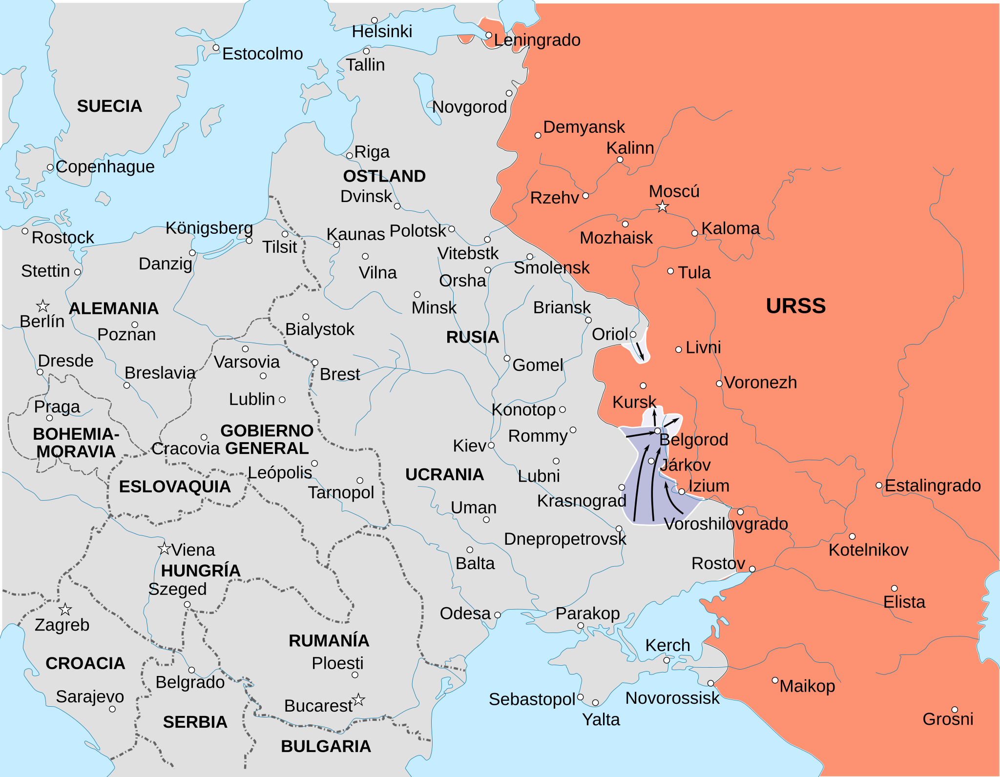

Batalla de Kursk
La última gran ofensiva alemana en el Frente Oriental (Operación Ciudadela) y la mayor batalla de tanques de la historia.
Datos
| Fechas | 5 de julio – 23 de agosto de 1943 |
|---|---|
| Lugar | Saliente de Kursk, Unión Soviética |
| Resultado | Victoria soviética decisiva; Alemania pierde para siempre la iniciativa en el este |
| Bando atacante | Alemania (Operación Ciudadela) |
| Defensor | Unión Soviética |
| Comandantes | Erich von Manstein, Walter Model (Alemania); Gueorgui Zhúkov, Konstantín Rokossovski, Nikolái Vatutin (URSS) |
| Clave | El choque de blindados de Prójorovka, uno de los mayores de la historia |
Bandos
Operación Ciudadela
Defensa en profundidad
Introducción
Tras la derrota de Stalingrado, Alemania buscó recuperar la iniciativa con un golpe limitado pero potente: eliminar el gran saliente soviético en torno a la ciudad de Kursk mediante un ataque en pinza desde el norte y el sur. Los soviéticos, avisados de antemano, convirtieron el saliente en la posición defensiva más fortificada de la guerra.
Razones
- Recuperar la iniciativa: tras Stalingrado, Alemania necesitaba una victoria que estabilizara el frente y demostrara su fuerza.
- Un objetivo tentador: el saliente de Kursk invitaba a un cerco clásico que podía atrapar a grandes fuerzas soviéticas.
- Estrenar nuevos blindados: Alemania quería emplear en masa sus nuevos tanques Panther y Tiger y los cazacarros Ferdinand.
Cuerpo (desarrollo)
Gracias a la inteligencia, los soviéticos conocían el plan y prepararon una defensa en profundidad: cinturones de trincheras, campos de minas, artillería anticarro y reservas blindadas escalonadas. Cuando la Operación Ciudadela comenzó el 5 de julio, los blindados alemanes se desangraron avanzando lentamente entre las defensas.
El 12 de julio se libró cerca de Prójorovka uno de los mayores enfrentamientos de tanques de la historia. Ese mismo día, los soviéticos lanzaron sus propias contraofensivas en otros sectores. Con el desembarco aliado en Sicilia obligando a desviar fuerzas, Hitler canceló Ciudadela. A partir de ahí, el Ejército Rojo pasó a la ofensiva permanente.

Mapa estratégico del Frente Oriental (febrero–agosto de 1943) en español, Wikimedia Commons, que incluye el saliente de Kursk.
Conclusión
Kursk fue la última vez que Alemania tomó la iniciativa estratégica en el este. Tras ella, la Wehrmacht solo pudo retroceder.
- Alemania perdió una masa de blindados y hombres que ya no podía reponer.
- El Ejército Rojo demostró haber aprendido a combinar defensa elástica y contraofensiva.
- Comenzó el avance soviético imparable que, dos años después, llegaría a Berlín.
Curiosidades
- Defensa avisada: la inteligencia soviética (y el espionaje "Lucy") conocía los planes alemanes con notable detalle antes del ataque.
- Prójorovka: se convirtió en símbolo del choque masivo de tanques, aunque las cifras exactas de blindados implicados siguen debatiéndose.
- Sicilia influyó: el desembarco aliado en Italia obligó a Hitler a retirar unidades de élite del frente de Kursk.
Teorías
Debates e interpretaciones historiográficas, presentados como tales:
- El mito de Prójorovka: investigaciones recientes revisan a la baja el número de tanques enfrentados y las pérdidas soviéticas, matizando el relato tradicional.
- ¿Se atacó demasiado tarde? Se debate si el retraso de Ciudadela (para esperar a los nuevos tanques) dio a los soviéticos el tiempo decisivo para fortificarse.